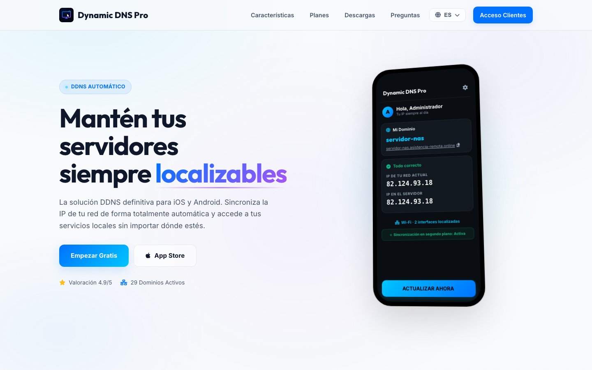

Download
What it is
Dynamic DNS Pro binds a memorable name (your-server.dynamicdnspro.com) to your network's changing public IP. The app detects every network change — Wi-Fi to 4G/5G, home to anywhere — and updates the record in seconds. No scripts, no stale IPs: reach your NAS, server or camera by the same name, always.

Features
How to use it
- 1Sign up at dynamicdnspro.com (Free plan) and create your domain — e.g.
my-nas.dynamicdnspro.com. - 2Install the mobile app and link your domain: your IP updates itself on every network change.
- 3On any Windows PC you want reachable, install the Agent — it keeps the IP fresh in the background and audits the machine.
- 4For remote assistance, install the Remote module: WebRTC desktop and file transfer from the web panel.
- 5Point your services (VPN, NAS, cameras) at the DDNS name — you no longer depend on the numeric IP.
Editions & pricing
| Plan | Price | Domains | Includes |
|---|---|---|---|
| Free | €0/mo | 1 | Manual + background updates, IP-change alerts |
| Basic | €0.99/mo | 5 | Background sync, email/push alerts, multi-domain |
| Pro | €1.99/mo | 15 | Priority alerts, interface config, 24/7 support |
| Elite | €2.99/mo | 25 | Everything in Pro, for large infrastructures |
Requirements
iOS and Android for the mobile app · Windows for Agent and Remote · Every release ships .sha256 checksums for all binaries.
What's in this repository
DynamicDNSPro-Agent-Setup-<version>.exe— Windows agent installer (DDNS + audit + monitoring)DynamicDNSPro-Remote-Setup-<version>.exe— remote module installer (WebRTC + files)ddnspro-bin-<version>.zip— full packaged binariesddns_engine.exe,agente_v3.exe,supervisor.exe,smartctl.exe— standalone components*.sha256— checksums for every binaryversion.json,fleet.json— version and fleet feeds for auto-update
FAQ
What is Dynamic DNS?
It binds a fixed name (your-name.dynamicdnspro.com) to a changing IP. When your ISP rotates the address, the name always resolves correctly.
Can I report a VPN interface's IP?
Yes — from the Basic plan up you can explicitly choose which interface or VPN tunnel to report.
Why two Windows installers?
Agent keeps your DNS current and audits the machine; Remote adds WebRTC remote desktop and file transfer. Install only what you need.
Support
- Website & client portal: dynamicdnspro.com
- FAQ: dynamicdnspro.com#faq